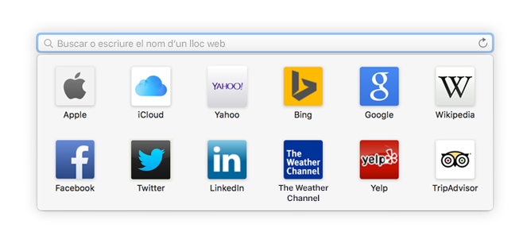
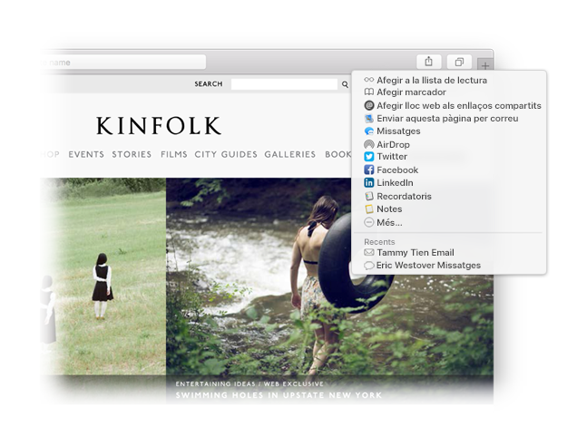

Busqueu un favorit.
Feu clic al camp de cerca intel·ligent per accedir als vostres llocs web favorits. Feu clic a un lloc web per anar-hi.

Poseu una xinxeta en un lloc web.
Arrossegueu una pestanya a l’esquerra per posar una xinxeta en un lloc web i que aquest es quedi a la barra de pestanyes.

Compartiu un enllaç.
Feu clic a  per enviar un enllaç en un correu electrònic o un missatge de text, compartir‑lo al Facebook o al Twitter, o afegir‑lo a l’aplicació Notes.
per enviar un enllaç en un correu electrònic o un missatge de text, compartir‑lo al Facebook o al Twitter, o afegir‑lo a l’aplicació Notes.